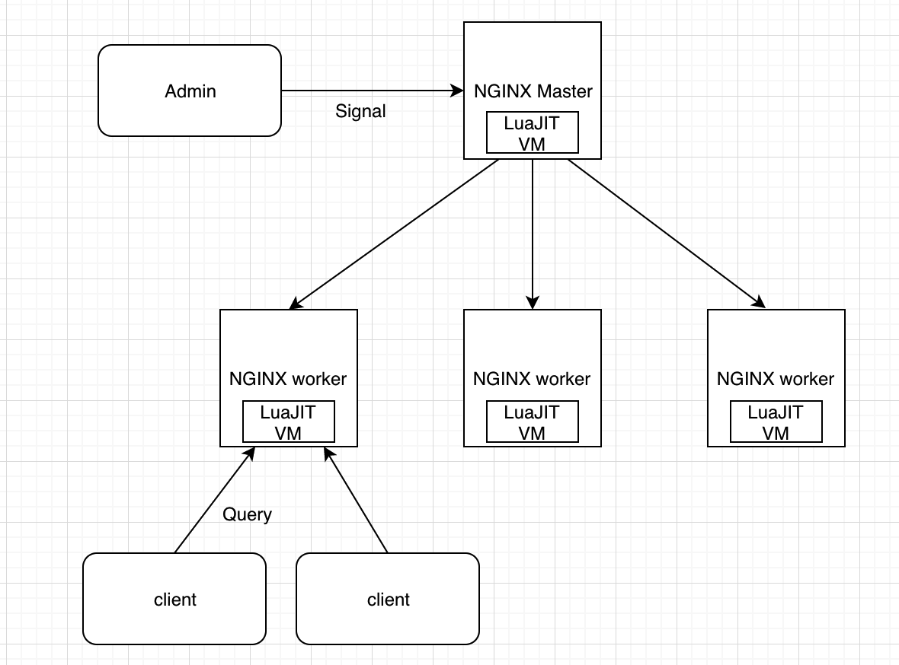

- 00 开篇词 OpenResty，为你打开高性能开发的大门.md.html
- 01 初探OpenResty的三大特性.md.html
- 02 如何写出你的“hello world”？.md.html
- 03 揪出隐藏在背后的那些子项目.md.html
- 04 如何管理第三方包？从包管理工具luarocks和opm说起.md.html
- 05 [视频]opm项目导读.md.html
- 06 OpenResty 中用到的 NGINX 知识.md.html
- 07 带你快速上手 Lua.md.html
- 08 LuaJIT分支和标准Lua有什么不同？.md.html
- 09 为什么 lua-resty-core 性能更高一些？.md.html
- 10 JIT编译器的死穴：为什么要避免使用 NYI ？.md.html
- 11 剖析Lua唯一的数据结构table和metatable特性.md.html
- 12 高手秘诀：识别Lua的独有概念和坑.md.html
- 13 [视频]实战：基于FFI实现的lua-resty-lrucache.md.html
- 14 答疑（一）：Lua 规则和 NGINX 配置文件产生冲突怎么办？.md.html
- 15 OpenResty 和别的开发平台有什么不同？.md.html
- 16 秒杀大多数开发问题的两个利器：文档和测试案例.md.html
- 17 为什么能成为更好的Web服务器？动态处理请求和响应是关键.md.html
- 18 worker间的通信法宝：最重要的数据结构之shared dict.md.html
- 19 OpenResty 的核心和精髓：cosocket.md.html
- 20 超越 Web 服务器：特权进程和定时任务.md.html
- 21 带你玩转时间、正则表达式等常用API.md.html
- 22 [视频]从一个安全漏洞说起，探寻API性能和安全的平衡.md.html
- 23 [视频]导读lua-resty-requests：优秀的lua-resty-_是如何编写的？.md.html
- 24 实战：处理四层流量，实现Memcached Server.md.html
- 25 答疑（二）：特权进程的权限到底是什么？.md.html
- 26 代码贡献者的拦路虎：test__nginx 简介.md.html
- 27 test__nginx 包罗万象的测试方法.md.html
- 28 test__nginx 还可以这样用？.md.html
- 29 最容易失准的性能测试？你需要压测工具界的“悍马”wrk.md.html
- 30 答疑（三）如何搭建测试的网络结构？.md.html
- 31 性能下降10倍的真凶：阻塞函数.md.html
- 32 让人又恨又爱的字符串操作.md.html
- 33 性能提升10倍的秘诀：必须用好 table.md.html
- 34 特别放送：OpenResty编码指南.md.html
- 35 [视频]实际项目中的性能优化：ingress-nginx中的几个PR解读.md.html
- 36 盘点OpenResty的各种调试手段.md.html
- 37 systemtap-toolkit和stapxx：如何用数据搞定“疑难杂症”？.md.html
- 38 [视频]巧用wrk和火焰图，科学定位性能瓶颈.md.html
- 39 高性能的关键：shared dict 缓存和 lru 缓存.md.html
- 40 缓存与风暴并存，谁说缓存风暴不可避免？.md.html
- 41 lua-resty-_ 封装，让你远离多级缓存之痛.md.html
- 42 如何应对突发流量：漏桶和令牌桶的概念.md.html
- 43 灵活实现动态限流限速，其实没有那么难.md.html
- 44 OpenResty 的杀手锏：动态.md.html
- 45 不得不提的能力外延：OpenResty常用的第三方库.md.html
- 46 答疑（四）：共享字典的缓存是必须的吗？.md.html
- 47 微服务API网关搭建三步曲（一）.md.html
- 48 微服务API网关搭建三步曲（二）.md.html
- 49 微服务API网关搭建三步曲（三）.md.html
- 50 答疑（五）：如何在工作中引入 OpenResty？.md.html
- 结束语 行百里者半九十.md.html
- 捐赠
08 LuaJIT分支和标准Lua有什么不同？
你好，我是温铭。
这节课，我们来学习下 OpenResty 的另一块基石：LuaJIT。今天主要的篇幅，我会留给 Lua 和 LuaJIT 中重要和鲜为人知的一些知识点。而更多 Lua 语言的基础知识，你可以通过搜索引擎或者 Lua 的书籍自己来学习，这里我推荐 Lua 作者编写的《Lua 程序设计》这本书。
当然，在 OpenResty 中，写出正确的 LuaJIT 代码的门槛并不高，但要写出高效的 LuaJIT 代码绝非易事，这里的关键内容，我会在后面 OpenResty 性能优化部分详细介绍。
我们先来看下 LuaJIT 在 OpenResty 整体架构中的位置：

前面我们提到过，OpenResty 的 worker 进程都是 fork master 进程而得到的， 其实， master 进程中的 LuaJIT 虚拟机也会一起 fork 过来。在同一个 worker 内的所有协程，都会共享这个 LuaJIT 虚拟机，Lua 代码的执行也是在这个虚拟机中完成的。
这可以算是 OpenResty 的基本原理，后面课程我们再详细聊聊。今天我们先来理顺 Lua 和 LuaJIT 的关系。
标准 Lua 和 LuaJIT 的关系
先把重要的事情放在前面说：
标准 Lua 和 LuaJIT 是两回事儿，LuaJIT 只是兼容了 Lua 5.1 的语法。
标准 Lua 现在的最新版本是 5.3，LuaJIT 的最新版本则是 2.1.0-beta3。在 OpenResty 几年前的老版本中，编译的时候，你可以选择使用标准 Lua VM ，或者 LuaJIT VM 来作为执行环境，不过，现在已经去掉了对标准 Lua 的支持，只支持 LuaJIT。
LuaJIT 的语法兼容 Lua 5.1，并对 Lua 5.2 和 5.3 做了选择性支持。所以我们应该先学习 Lua 5.1 的语法，并在此基础上学习 LuaJIT 的特性。上节课我已经带你入门了 Lua的基础语法，今天只提及Lua的一些特别之处。
值得注意的是，OpenResty 并没有直接使用 LuaJIT 官方提供的 2.1.0-beta3 版本，而是在此基础上，扩展了自己的 fork: [openresty-luajit2]：
OpenResty 维护了自己的 LuaJIT 分支，并扩展了很多独有的 API。
这些独有的 API，都是在实际开发 OpenResty 的过程中，出于性能方面的考虑而增加的。所以，我们后面提到的 LuaJIT，特指 OpenResty 自己维护的 LuaJIT 分支。
为什么选择 LuaJIT？
说了这么多 LuaJIT和Lua 的关系，你可能会纳闷儿，为什么不直接使用Lua，而是要用自己维护的LuaJIT呢？其实，最主要的原因，还是LuaJIT的性能优势。
其实标准 Lua 出于性能考虑，也内置了虚拟机，所以 Lua 代码并不是直接被解释执行的，而是先由 Lua 编译器编译为字节码（Byte Code），然后再由 Lua 虚拟机执行。
而 LuaJIT 的运行时环境，除了一个汇编实现的 Lua 解释器外，还有一个可以直接生成机器代码的 JIT 编译器。开始的时候，LuaJIT和标准 Lua 一样，Lua 代码被编译为字节码，字节码被 LuaJIT 的解释器解释执行。
但不同的是，LuaJIT的解释器会在执行字节码的同时，记录一些运行时的统计信息，比如每个 Lua 函数调用入口的实际运行次数，还有每个 Lua 循环的实际执行次数。当这些次数超过某个随机的阈值时，便认为对应的 Lua 函数入口或者对应的 Lua 循环足够热，这时便会触发 JIT 编译器开始工作。
JIT 编译器会从热函数的入口或者热循环的某个位置开始，尝试编译对应的 Lua 代码路径。编译的过程，是把 LuaJIT 字节码先转换成LuaJIT 自己定义的中间码（IR），然后再生成针对目标体系结构的机器码。
所以，所谓 LuaJIT 的性能优化，本质上就是让尽可能多的 Lua 代码可以被 JIT 编译器生成机器码，而不是回退到 Lua 解释器的解释执行模式。明白了这个道理，你才能理解后面学到的OpenResty 性能优化的本质。
Lua 特别之处
正如我们上节课介绍的一样，Lua 语言相对简单。对于有其他开发语言背景的工程师来说，注意 到Lua 中一些独特的地方后，你就能很容易的看懂代码逻辑。接下来，我们一起来看Lua语言比较特别的几个地方。
1. Lua 的下标从 1 开始
Lua 是我知道的唯一一个下标从 1 开始的编程语言。这一点，虽然对于非程序员背景的人来说更好理解，但却容易导致程序的 bug。
下面是一个例子：
$ resty -e 't={100}; ngx.say(t[0])'
你自然期望打印出 100，或者报错说下标 0 不存在。但结果出乎意料，什么都没有打印出来，也没有报错。既然如此，让我们加上 type 命令，来看下输出到底是什么：
$ resty -e 't={100};ngx.say(type(t[0]))'
nil
原来是空值。事实上，在 OpenResty 中，对于空值的判断和处理也是一个容易让人迷惑的点，后面我们讲到 OpenResty 的时候再细聊。
2. 使用 .. 来拼接字符串
这一点，上节课我也提到过。和大部分语言使用 + 不同，Lua 中使用两个点号来拼接字符串：
$ resty -e "ngx.say('hello' .. ', world')"
hello, world
在实际的项目开发中，我们一般都会使用多种开发语言，而Lua 这种不走寻常路的设计，总是会让开发者的思维，在字符串拼接的时候卡顿一下，也是让人哭笑不得。
3. 只有 table 这一种数据结构
不同于 Python 这种内置数据结构丰富的语言，Lua 中只有一种数据结构，那就是 table，它里面可以包括数组和哈希表：
local color = {first = "red", "blue", third = "green", "yellow"}
print(color["first"]) --> output: red
print(color[1]) --> output: blue
print(color["third"]) --> output: green
print(color[2]) --> output: yellow
print(color[3]) --> output: nil
如果不显式地用_键值对_的方式赋值，table 就会默认用数字作为下标，从 1 开始。所以 color[1] 就是 blue。
另外，想在 table 中获取到正确长度，也是一件不容易的事情，我们来看下面这些例子：
local t1 = { 1, 2, 3 }
print("Test1 " .. table.getn(t1))
local t2 = { 1, a = 2, 3 }
print("Test2 " .. table.getn(t2))
local t3 = { 1, nil }
print("Test3 " .. table.getn(t3))
local t4 = { 1, nil, 2 }
print("Test4 " .. table.getn(t4))
使用 resty 运行的结果如下：
Test1 3
Test2 2
Test3 1
Test4 1
你可以看到，除了第一个返回长度为 3 的测试案例外，后面的测试都是我们预期之外的结果。事实上，想要在Lua 中获取 table 长度，必须注意到，只有在 table 是 _序列_ 的时候，才能返回正确的值。
那什么是序列呢？首先序列是数组（array）的子集，也就是说，table 中的元素都可以用正整数下标访问到，不存在键值对的情况。对应到上面的代码中，除了 t2 外，其他的 table 都是 array。
其次，序列中不包含空洞（hole），即 nil。综合这两点来看，上面的 table 中， t1 是一个序列，而 t3 和 t4 是 array，却不是序列（sequence）。
到这里，你可能还有一个疑问，为什么 t4 的长度会是 1 呢？其实这是因为，在遇到 nil 时，获取长度的逻辑就不继续往下运行，而是直接返回了。
不知道你完全看懂了吗？这部分确实相当复杂。那么有没有什么办法可以获取到我们想要的 table 长度呢？自然是有的，OpenResty 在这方面做了扩展，在后面专门的 table 章节我会讲到，这里先留一个悬念。
4. 默认是全局变量
我想先强调一点，除非你相当确定，否则在 Lua 中声明变量时，前面都要加上 local：
local s = 'hello'
这是因为在 Lua 中，变量默认是全局的，会被放到名为 _G 的 table 中。不加 local 的变量会在全局表中查找，这是昂贵的操作。如果再加上一些变量名的拼写错误，就会造成难以定位的 bug。
所以，在 OpenResty 编程中，我强烈建议你总是使用 local 来声明变量，即使在 require module 的时候也是一样：
-- Recommended
local xxx = require('xxx')
-- Avoid
require('xxx')
LuaJIT
明白了Lua这四点特别之处，我们继续来说LuaJIT。除了兼容 Lua 5.1 的语法并支持 JIT 外，LuaJIT 还紧密结合了 FFI（Foreign Function Interface），可以让你直接在 Lua 代码中调用外部的 C 函数和使用 C 的数据结构。
下面是一个最简单的例子：
local ffi = require("ffi")
ffi.cdef[[
int printf(const char *fmt, ...);
]]
ffi.C.printf("Hello %s!", "world")
短短这几行代码，就可以直接在 Lua 中调用 C 的 printf 函数，打印出 Hello world!。你可以使用 resty 命令来运行它，看下是否成功。
类似的，我们可以用 FFI 来调用 NGINX、OpenSSL 的 C 函数，来完成更多的功能。实际上，FFI 方式比传统的 Lua/C API 方式的性能更优，这也是 lua-resty-core 项目存在的意义。下一节我们就来专门讲讲 FFI 和 lua-resty-core。
此外，出于性能方面的考虑，LuaJIT 还扩展了 table 的相关函数：table.new 和 table.clear。这是两个在性能优化方面非常重要的函数，在 OpenResty 的 lua-resty 库中会被频繁使用。不过，由于相关文档藏得非常深，而且没有示例代码，所以熟悉它们的开发者并不多。我们留到性能优化章节专门来讲它们。
写在最后
让我们来回顾下今天的内容。
OpenResty 出于性能的考虑，选择了 LuaJIT 而不是标准 Lua，并且维护了自己的 LuaJIT 分支。而 LuaJIT 基于 Lua 5.1 的语法，并选择性地兼容了部分 Lua5.2 和 Lua5.3 的语法，形成了自己的体系。至于你需要掌握的Lua 语法，在下标、字符串拼接、数据结构和变量上，都有自己鲜明的特点，在写代码的时候你应该特别留意。
你在学习 Lua 和 LuaJIT 的时候，是否遇到一些陷阱和坑呢？欢迎留言一起来聊一聊，我在后面也专门写了一篇文章，来分享我遇到过的那些坑。也欢迎你把这篇文章分享给你的同事、朋友，一起学习，一起进步。
© 2019 - 2023 Liangliang Lee. Powered by gin and hexo-theme-book.